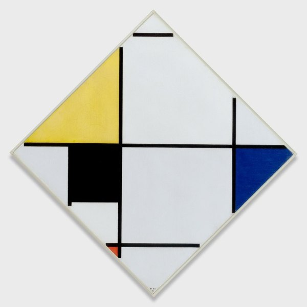
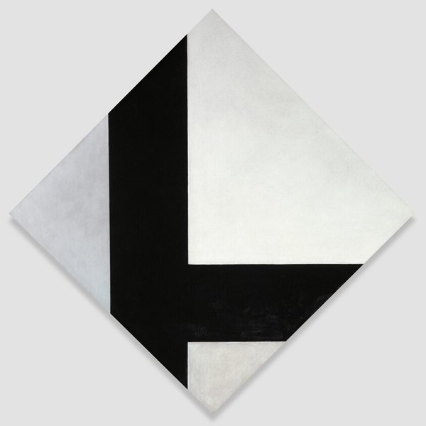
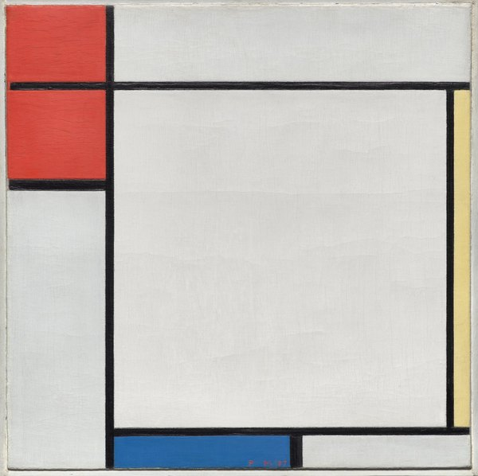
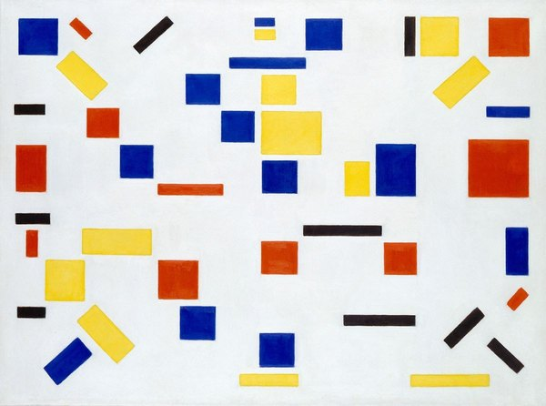
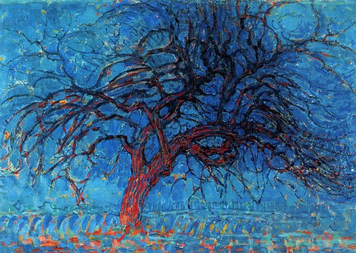
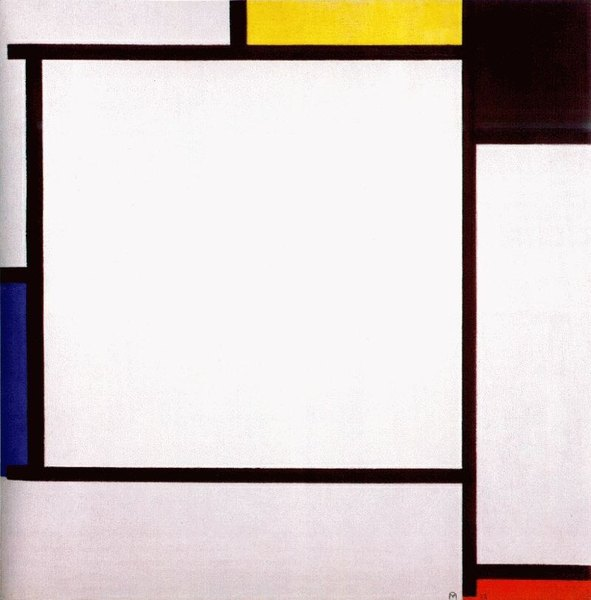
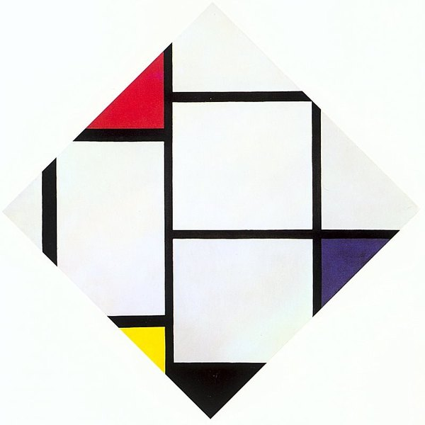
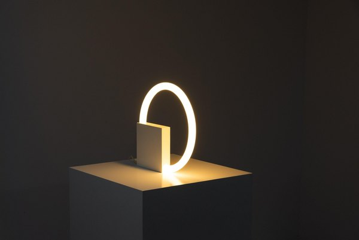
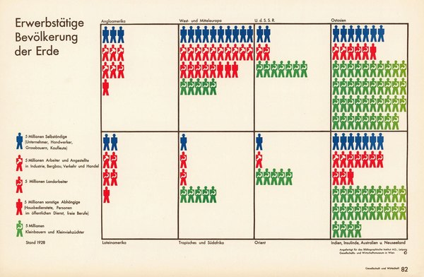
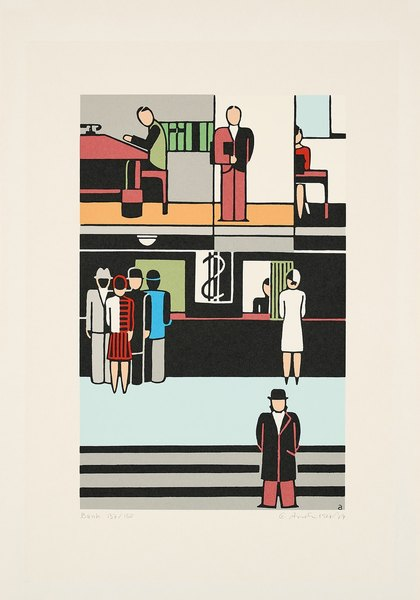

CRVI000308Palais Schaumburg - Palais Schaumburg
Designer unknown · Phonogram · 1981
Designer unknown · Phonogram · 1981

CRVI000434Feist - The Reminder (Deluxe Version)
Designer unknown · Polydor · 2007
Designer unknown · Polydor · 2007

CRVI001389Al Hansen - Joseph Beuys Stuka Dive Bomber Piece & Other Stories
Al Hansen · Slowscan vol. 20 · 2006
Al Hansen · Slowscan vol. 20 · 2006

CRVI001608Jan Toorop - Novemberzon
1888
1888

CRVI001628Kees van Dongen - Modjesko, Soprano Singer
1908
1908

CRVI001744Piet Mondrian - Lozenge Composition with Yellow, Black, Blue, Red, and Gray
1921
1921

CRVI001745Theo van Doesburg - Counter-Composition VIII
1924
1924

CRVI001746Piet Mondrian - Composition with Red, Yellow, and Blue
1927
1927

CRVI001747Bart van der Leck - Composition

CRVI002210Piet Mondrian - Avond (Evening): The Red Tree
1910
1910

CRVI002211Piet Mondrian - Composition II
1922
1922

CRVI002212Piet Mondrian - Lozenge Composition with Red, Gray, Blue, Yellow and Black
1925
1925

CRVI002730Aldo van den Nieuwelaar - TC6 lamp
1972
1972

CRVI002771Gerd Arntz - Erwerbstätige Bevölkerung der Erde
1938
1938

CRVI002772Gerd Arntz - Bank